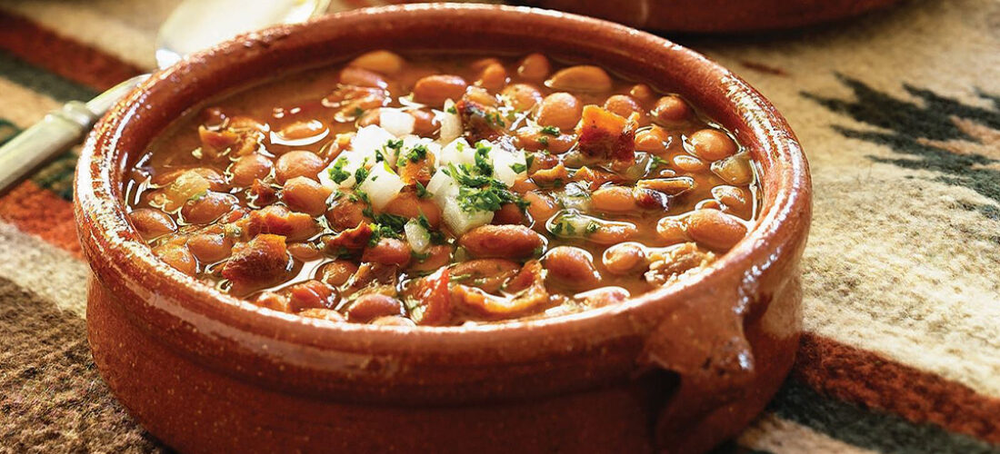

Charro Beans

A plate filled with soft beans, various spices and chorizo.
Description
Beans have been a staple of mexican cuisine for centuries, so it's no wonder they are incorporated into innumerable recipes, either as a side dish or as a protagonist.
This traditional mexican plate evolved from the pre-columbian era to what it is today thanks to the addition of pork (in the form of chorizo).
Although it requires some ingredients and preparation before-hand, once everything is ready, they are ridiculously easy to make, and will surely become a recipe you'll use often.
Ingredients
- A pressure cooker (optional, it'll make your beans cook much faster).
- A potatoe masher.
- 800 g of black beans.
- Half an onion.
- 2 garlic cloves.
- 300 g of chorizo.
- 10 g of grounded marjoram.
- Salt.
- Pepper.
Steps
- The night before you want to prepare the dish, rinse your beans with water and let them soak overnight. The next day, they should appear more soft and plump, which will help with the cooking.
- Once your beans are hydrated, set them in you pressure cooker with enough water to cover, along with your half onion and your peeled garlic cloves.
- When you hear the cooker boil, turn the heat down and let them cook for 40 minutes - 1 hour (this may take muhc longer in a nirmal pot, from 2 hours up to 4 hours).
- After they have finished cooking, season to taste with salt and let them boil for another 10 minutes to incorporate the flavor (you don't have to cover the pressure cooker this time).
- In a separate pan, begin cooking your chorizo until its fat renders into the pan and the meat gets thouroughly cooked.
- With the chorizo cooked, add some of your beans and cooking water into the pan, let it cook for 20 minutes (the longer they cook, the better they'll taste).
- Serve in a deep plate and enjoy!